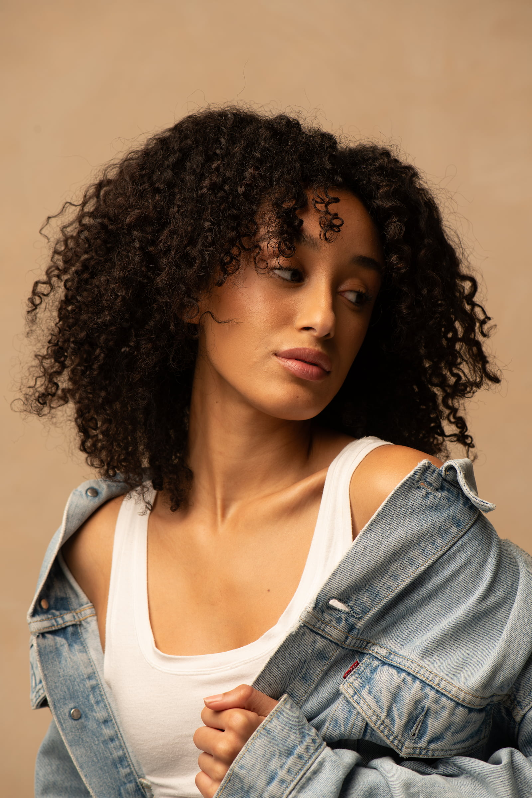

Building a Natural Studio Portrait
Everything in this shoot was chosen to keep the portrait natural, warm and unforced, building towards a relaxed, denim-led Americana look that still feels commercial.
Light: I used one large softbox, placed 45 degrees camera left and angled down towards subject, for Rembrandt lighting. The size of the source wraps softly around the face, while the angle leaves a shadow on one side that adds shape and depth. I wanted that shadow to bring contrast to the softness.
Backdrop: I skipped the white backdrop for a peachy, textured wall. White can feel clinical and flat, whereas the wall adds warmth and texture, and complements darker skin tones rather than washing them out.
Wardrobe: The wardrobe was deliberately worn-in and relaxed, the kind of pieces that look lived-in rather than styled. That keeps the focus on the person, not the outfit.
Result: A natural, denim Americana look that feels both relatable and commercial.
